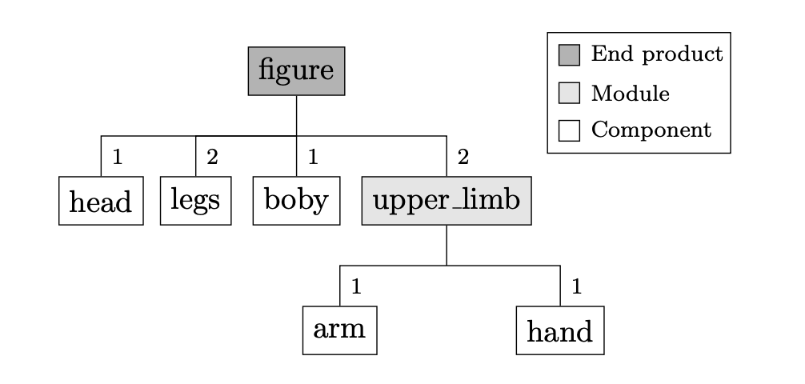
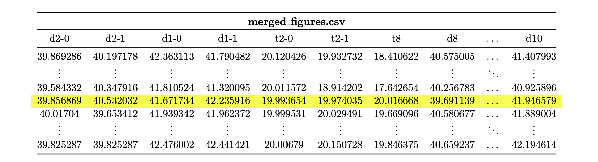

Example 04: Toy figure
In this example, the characteristics of accessing assembly workpiece attributes are demonstrated. In addition, the usage of the workpiece attributes reject and item_id is described. Finally, the output structure is presented along with how the output can be transformed into the required format.
Process description
The production of plastic toy figures serves as an example process. The following product tree describes the components, their quantities, and the assembly relationships.
{kind=link}
The components arm, hand, leg and head are produced externally and do not have separate machining steps within the process itself. The body component is injection-molded within the process. First, the components arm and hand are assembled into the module upper_limb. In the following assembly process, all components are assembled in a figure. Finally, quality is checked and incorrect figures are rejected.

The components are connected using ball-and-socket joints. Each joint has a diameter. Based on the difference in diameters, the tension that occurs in the joint is determined. For example:
The diameters of the joints are the attributes of the respective components, whereas the resulting tensions are determined during assembly and are therefore attributes of the modules or the final product. Since the figure is symmetrical, all arms, hands, and legs have the same attributes with individual characteristics.

Assemble function
This subsection describes the assembly function that is called at the station assemble_figure. The argument item of the function references the workpiece in whose process path the station from which the process function was called is located (figure). This attribute can be used to access all assembled workpieces that are assembled before or at the station under consideration. According to the following relationship, the tension is calculated and stored in attributes t4 to t8 of the figure workpiece for each ball joint:
As an example, tension t4 is used to describe the access of the required diameters; t4 depends on d3 of the right arm and on d4 of the body. Since item refers to figure, the module upper_limb must be accessed first. Since there are two upper_limbs, one of the two must be selected. By definition, it is declared that the first element corresponds to the right upper_limb. Since d3 is an attribute of the arm, the upper_limb must be used to access the arm and then d3. This results in the following:
d3_1 = item.upper_limb[0].arm.d3
The structure is similar for the diameter d4. First, item (or figure) must be used to refer to body. Since d4 is an attribute of body, d4 can be accessed as follows:
d4 = item.body.d4
The two stresses t2 have already been determined during the assembly of the component upper_limb.
def assemble_figure(env, item, machine, factory):
# Get the diameters of the assembled items
d3_1 = item.upper_limb[0].arm.d3
d3_2 = item.upper_limb[1].arm.d3
d9_1 = item.leg[0].d9
d9_2 = item.leg[1].d9
d10 = item.head.d10
def get_t(d1, d2):
return (d2 - d1 - 2)**3 + 20
# Calculate the tension
item.t4 = get_t(item.body.d4, d3_1)
item.t5 = get_t(item.body.d5, d9_1)
item.t6 = get_t(item.body.d6, d9_2)
item.t7 = get_t(item.body.d7, d3_2)
item.t8 = get_t(item.body.d8, d10)
# Block the machine for the assembly time
yield env.timeout(1)
Quality check
During quality control, all figures that do not fulfill the quality requirements are rejected. The criterion used here is the tension, which must lie within a specified interval to be able to rotate the corresponding components against each other. For each tension, a check is performed to ensure that it lies within the specified interval. If not, then the reject attribute is set to True. Consequently, this item (including all assembled items) is removed from the process and is not added to the following store.
In addition, the id of the figures is stored in the global attribute rejected_id to identify them more easily. In the following, a method for identifying rejected items without global attributes is described.
def quality_check(env, item, machine, factory):
# Limits for the tension
t_min = 17.0
t_max = 23.0
def is_reject(t):
if t <= t_min or t >= t_max:
item.reject = True
factory.rejected_id = item.item_id
return True
return False
# Reject items and update profiling attributes
if is_reject(item.t4):
machine.r4 += 1
if is_reject(item.t5):
machine.r5 += 1
if is_reject(item.t6):
machine.r6 += 1
if is_reject(item.t7):
machine.r7 += 1
if is_reject(item.t8):
machine.r8 += 1
if is_reject(item.upper_limb[0].t2):
machine.r2_1 += 1
if is_reject(item.upper_limb[1].t2):
machine.r2_2 += 1
# Block quality machine
yield env.timeout(1)
The diameters of the joints are distributed as follows:
For d8, a normal distribution is also assumed, but the mean diameter continues to increase due to wear during the injection. After 1500 injection processes, the mold is replaced so that the diameter starts again at 40. The following figure visualizes the behavior on the basis of the number of rejects corresponding to the rejection reasons r6, r7, and r8.

Note
If no attributes are changed at a station (e.g., quality_check), then setting the attribute measurement to true is recommended because the workpiece attributes will not be tracked at this station. This reduces the data usage.
Merge output data
As a standard, the simulation data for each simulation object (order, station, factory) is saved in its own file. The following text describes how these files can be merged in order to collect all information (d1,..,d10,t2,t4,..,t8) concerning a single figure for all figures in a time series. Data merging according to the underlying assembly structure is performed via the columns item_id and comp. Each order output whose workpieces represent assembly workpieces of at least one other order contains the column comp, which contains the item_id of the item for which the assembly item is assembled.
The following cutout of the csv file arm.csv indicates that the arm with the item_id 81 is mounted to an upper_limb item with the item_id 86. Likewise, arm 84 is assembled to upper_limb 87.

In the file hand.csv, there are the two arms (item_ids: 82 and 85), which are mounted to the upper_limbs with the item_ids 86 and 87.

Finally, in the file upper_limb.csv, the two workpieces with item_ids 86 and 87 can be found. They are mounted on a figure with the item_id 77.
{kind=link}
Based on the textually described context, the assembly structures can be automatically tracked. The following figure provides an overview of the required steps.
First, the csv files must be filtered so that only the rows containing items at the last station (or at the station where the current assembly structure is to be traced) are left
All columns that are not required are removed. Only the attribute columns are kept in files representing sub components, while the comp column is chosen as the index. In files belonging to main items, the item_id is used as the index, and all columns except the comp and attribute columns are deleted.
The main file is connected to the sub file (any number of sub files can be used) via the index (the concat method from the pandas library is recommended).
If the main item is assembled further, the comp column must subsequently be selected as the index to connect the new file again.

A particular detail must be taken into account. If the demand is greater than one, then the comp column contains the item_id of the main item multiple times (e.g., upper_limb.csv - item_id: 77). The following figure demonstrates how this case is handled. The file is split off (e.g., with the groupby method from the pandas library) using the comp column. Thus, the attributes are numbered to be able to differentiate them later. This ensures that the index set comp is unique and can be used to merge the files.

The following code block shows how to switch a csv file to state 1 from the first figure. The get_df method already considers the case of demands greater than one. Thus, the partial data sets are returned in a list.
def get_df(name: str, num_main_args: int, sub: bool = True, amount: int = None):
index_col, labels = 'item_id', ['station_id']
if sub:
index_col, labels = 'comp', ['station_id', 'item_id']
# set 'index_col' as row index, and remove the column 'time' for all assemble objects by usecols (+3)
iter_csv = pd.read_csv(path + name + '.csv', usecols=[i for i in range(
num_main_args + 3)], iterator=True, chunksize=10_000, index_col=index_col)
# build DataFrame and remove the columns 'labels'
temp_df = pd.concat([chunk[chunk['station_id'] == station_id] for chunk in iter_csv]).drop(labels=labels, axis=1)
# if there are multiple objects split the dataframe an return them as a list
if amount is None:
return temp_df
return [temp_df.groupby('comp').nth(i).add_suffix('-%s' % i) for i in range(amount)]
The files created in this manner must be nested by hand according to the assembly structure. The following code block presents steps 2 and 3 for the final assembly step of a figure. Since the figure is the final assembly layer, the comp column does not exist in this file and cannot be set as the index. The used DataFrame upper_limb is previously generated according to the same logic.
figure = get_df("figure", 5, sub=False)
head = get_df("head", 1)
body = get_df("body", 5)
legs = get_df("leg", 1, amount=2)
figure = pd.concat([figure, head, legs[0], legs[1], upper_limb[0], upper_limb[1], body], axis=1)
del head, legs, upper_limb, body
The following file depicts the results of this transformation. The row marked in yellow corresponds to the figure with item_id 77. When the values of this column are compared with the elementary csv files shown at the beginning, the values are observed to have been combined correctly. The file created in this way contains all 21 attributes of a figure per row.
{kind=link}
Identify rejected items
Finally, how rejected workpieces can be identified is described. In the quality_check function, the item_id of rejected items is stored globally. In the last step of the concatenation process described above, this global index set can be used to filter the items whose item_id appears in this set. Similarly, if the difference set is formed instead of the intersection set, nonrejected items can be obtained.
Alternatively, global attributes can be avoided if further process steps follow after the station at which workpieces are declared to be rejects. First, the item_ids of all workpieces created by a source (station_id = -1) are summarized in a set. Analogously, an index set can be created that contains all item_ids of items that have passed a specific station. By forming the difference set, one receives all item_ids of workpieces that represent rejects. With this set, as described above, the rejected workpieces can be identified.